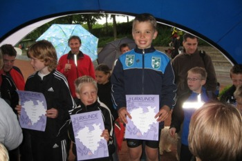

KREISEINZELMEISTERSCHAFTEN: UND WEITER GEHT`S MIT DEN ERFOLGEN

Auch die Jüngsten RLCler waren an diesem Wochenende mal wieder eine Erfolgsbank. Bei den Kreiseinzelmeisterschaften der B-C-D-Schüler in Herten gewannen:
Jonas Withake, M8, den Ballwurf mit 29,50m
Christian Coenen, M9, die 1000m in 3:49,06 min
Fiona Damm, W8, den Weitsprung mit 3,53m
Franziska Koch ,W9, den Ballwurf mit 29,00m
Laura Faltermann, W11, den Ballwurf mit 37,00m
Jacqueline Duda, W13, die 60m Hürden in 10,96 sec
Pia Jörden, W13, die 800m in 2:42,80 min